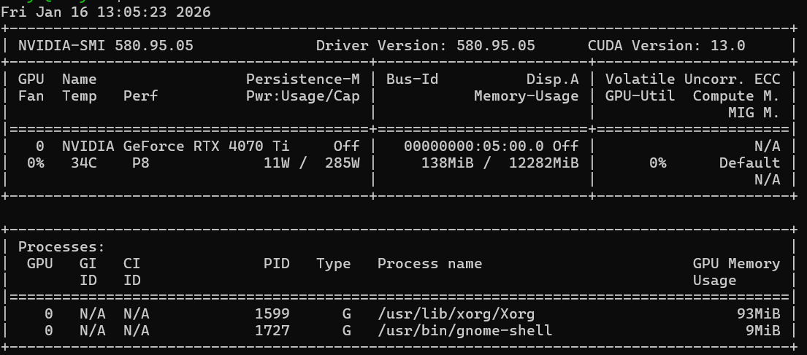
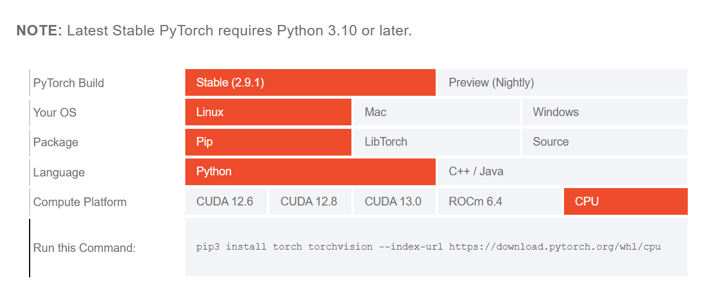
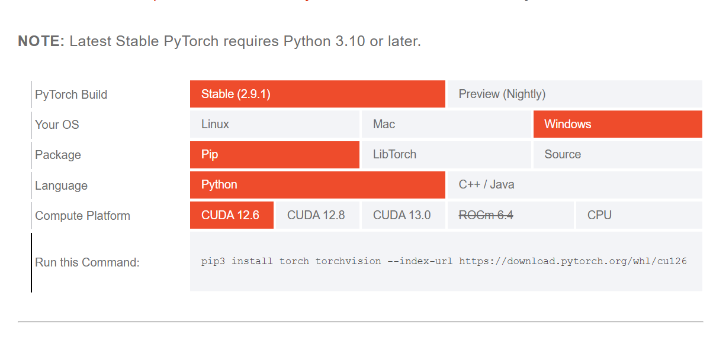
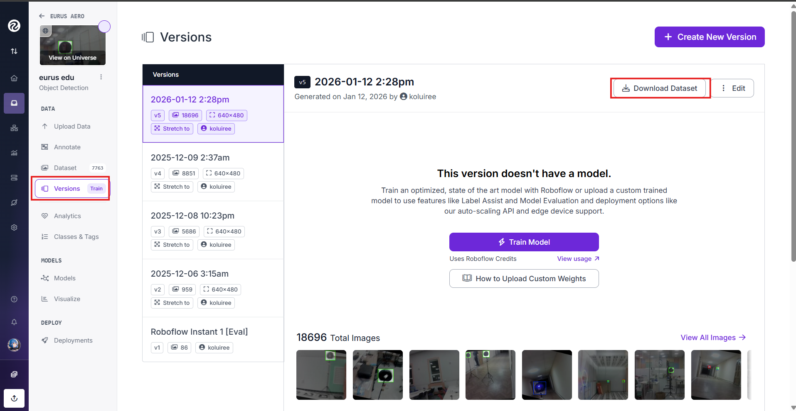
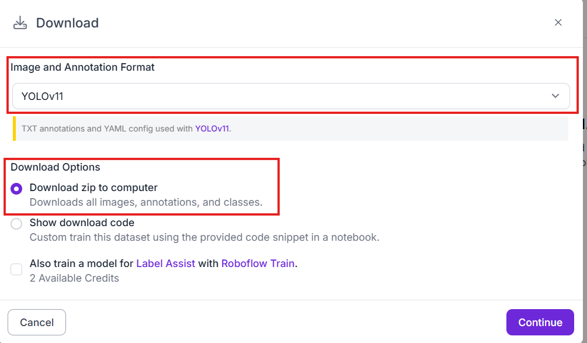
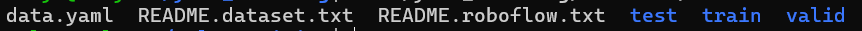

Обучение модели YOLOv11
Имеется два способа обучить нейронную сеть:
- На локальной машине
- С помощью Google Colab
Рассмотрим оба способа обучения своей нейронной сети
Обучение нейронной сети на локальной машине
Установка инструментов для обучения
Linux/Windows
Требования:
- >=Python3.10
Установка PyTorch и Ultralytics
Подробную информацию по установке можно найти в официальной документации Ultralytics.
Установка PyTorch:
Устанавливаем версию PyTorch в зависимости от системных характеристик. Версию CUDA можно проверить командой:
nvidia-smi

В случае, если у вас видеокарта AMD, можно проверить ROCm с помощью команды (только для Linux):
rocminfo
Заходим на официальный сайт PyTorch и выбираем подходящую версию. В случае, если у вас нет видеокарты, выбираем CPU.


Выполняем команду для установки PyTorch.Установка Ultralytics
С помощью pip устанавливаем библиотеку:
pip install -U ultralytics
Запуск обучения
Linux/Windows
Сперва скачиваем датасет с нашего проекта на Roboflow, заходим в наш проект → versions → Выбираем последнюю версию датасета → Download Dataset

После этого в Image and Annotation Format выбираем нашу модель (YOLOv11), ставим пункт Download zip to computer и нажимаем Continue.

Рекомендуется создать отдельную папку под обучение нейросети. Распаковываем туда архив с датасетом
Пример для Linux:
mkdir -p ~/yolo_train/dataset
unzip dataset.zip ~/yolo_train/dataset
cd ~/yolo_train
В папке ~/yolo_train/dataset мы увидим содержимое датасета:

Из этого нам требуется data.yaml, его надо указать при обучении нейросети
Запуск обучения:
cd ~/yolo_train
yolo detect train model=yolo11n.pt data=./dataset/data.yaml batch=-1 epochs=150 patience=20
После завершения обучения в директории ~/yolo_train/runs/detect/ должна появиться папка train/train2/train3 и т.д., в зависимости от того, какой раз вы запускаете обучение.
В папке ~/yolo_train/runs/detect/train/weights лежит файл best.pt, это и является файлом с весами для нашей модели нейронной сети.
Объяснение некоторых параметров команды yolo detect train:
model- Это желаемая модель для обучения, для образовательного дрона Eurus Edu рекомендуется yolo11n.ptdata- Указывается путь к data.yaml датасета, который будет использоваться при обучении нейронной сетиbatch- Количество данных для обучения в одной итерации (значение -1 значит что утилита автоматически выберет batch, для большей эффективности рекомендуется подобрать самому)epochs- Количество полных проходов нейросети через весь набор данныхpatience- Механизм ранней остановки обучения, в случае если нейросеть перестанет улучшать свои результаты с каждым эпохом (epochs), обучение нейросети остановится автоматически
Официальная документация Ultralytics по обучению модели.
Преобразование весов в поддерживаемый тип для RK3588
После того, как вы перенесли веса (best.pt) на Orange pi 5 (или любой другой микрокомпьютер с процессором Rockchip 3588), необходимо преобразовать стандартный best.pt в поддерживаемый микрокомпьютером файл.
Для этого можно использовать команду yolo export, пример ее использования:
yolo export model=best.pt format=rknn name=rk3588
После этого будет создана папка best_rknn_model, эту папку мы и будем использовать как модель при использовании ее в коде.
Официальная документация Ultralytics по преобразованию модели.
Возможные ошибки
CUDA out of memory - слишком большое количество batch, не хватает видеопамяти